امتحان الأسبوع الرابع: الاقتصاد الإداري
السؤال 1 (2 نقاط)
Question: Suppose Chris Piker, the owner-manager of Piker's Blueberry Farm, earned $82,000 in revenue last year. Piker's explicit costs of operation totaled $36,000. Chris has a degree in mechanical engineering and could be earning $40,000 annually as an engineer.
التفسير بالمصري
بص يا سيدي، Chris عنده مزرعة توت وجاب منها إيرادات $82,000 في السنة. التكاليف الصريحة (اللي دفعها فعلاً زي إيجار وخامات) = $36,000.
بس في حاجة تانية مهمة: Chris ممكن كان يشتغل مهندس ويجيب $40,000! ده بنسميه التكلفة الضمنية (Implicit Cost) - يعني الفرصة اللي ضاعت عليه.
- التكلفة الضمنية = $40,000 (مرتب المهندس اللي ساب)
- إجمالي التكاليف الاقتصادية = $36,000 + $40,000 = $76,000
- الربح الاقتصادي = $82,000 - $76,000 = $6,000
تخيل إنك فاتح كشك كشري وبتجيب 10,000 جنيه في الشهر، بس لو كنت اشتغلت موظف كنت هتجيب 7,000، والمصاريف 2,000. الربح الاقتصادي = 10,000 - 2,000 - 7,000 = 1,000 جنيه بس!
السؤال 2 (2 نقاط)
Question: Which of the following is a common mistake made by managers?
التفسير بالمصري
بص يا سيدي، المديرين بيغلطوا غلطة شائعة: بيفتكروا إن لو زودوا الإنتاج، تكلفة الوحدة هتقل. ده مش دايماً صح!
الاختيار (a) مش غلط لأن التحليل الحدي (Marginal Analysis) هو الطريقة الصح لاتخاذ قرارات الإنتاج.
الاختيار (b) مش غلط لأن احتساب تكلفة الفرصة البديلة كجزء من التكاليف ده الصح.
لكن الاختيار (c) هو الغلط الشائع: إن المدير يزود الإنتاج عشان يقلل تكلفة الوحدة. ليه؟ لأن بعد نقطة معينة، بيحصل تناقص عوائد (Diminishing Returns) والتكلفة الحدية بتزيد!
تخيل معايا: عندك مصنع فيه 5 ماكينات وزودت العمال من 10 لـ 50 - في الأول الإنتاج هيزيد بسرعة، بس بعد كده العمال هيتزاحموا والإنتاجية تقل.
السؤال 3 (2 نقاط)
Question: Which of the following would increase (and shift) the demand for tennis balls?
التفسير بالمصري
السؤال بيقول إيه اللي يخلي منحنى الطلب يتحرك (Shift) - مش حركة على المنحنى!
- (a) نقص سعر كرات التنس = حركة على المنحنى مش تحريك ليه ❌
- (b) زيادة سعر مضارب التنس = المضارب سلعة مكملة، لو غليت الناس هتلعب تنس أقل فالطلب على الكرات هيقل ❌
- (c) نقص تكلفة إنتاج كرات التنس = ده بيأثر على العرض مش الطلب ❌
- (d) زيادة دخل الأسر + كرات التنس سلعة عادية = الناس دخلها زاد يبقى هتشتري أكتر ✅
ببساطة: لو مرتبك زاد، هتروح الجيم أكتر وتشتري أدوات رياضة أكتر. ده بيحرك منحنى الطلب لليمين!
السؤال 4 (2 نقاط)

Question: Suppose that the market for diamond rings is in equilibrium until political unrest in South Africa shuts down the diamond mines there. South Africa is the world's primary supplier of diamonds. What will happen?
التفسير بالمصري
جنوب أفريقيا هي أكبر مورد الماس في العالم. لو حصلت اضطرابات سياسية وقفلوا المناجم، يبقى العرض هيقل (منحنى العرض هيتحرك لليسار).
لما العرض يقل:
- السعر هيزيد (مش هيقل) ❌ يبقى (b) غلط
- الطلب مش هيقل من نفسه ❌ يبقى (c) غلط
- العرض هيقل مش هيزيد ❌ يبقى (d) غلط
- الكمية التوازنية هتقل ✅ يبقى (a) صح
تخيل إن مصنع السكر الوحيد في مصر اتقفل - السكر هيغلى والكمية المتاحة في السوق هتقل!
📊 سياق الأسئلة 5-9
استخدم منحنيات العرض والطلب الخطية الموضحة أدناه:
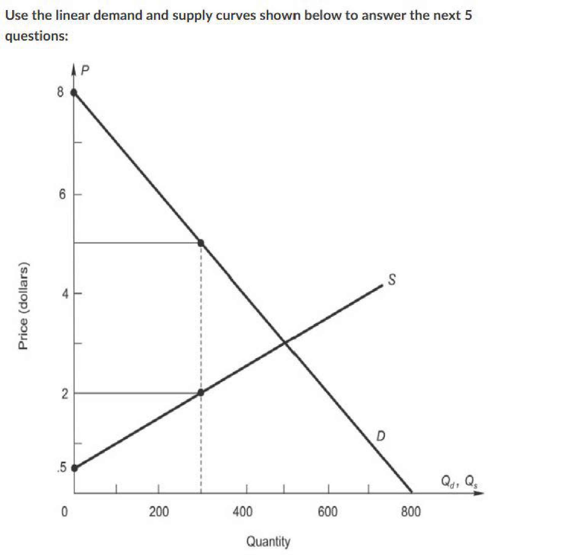السؤال 5 (2 نقاط)
Question: What is the equilibrium market price?
التفسير بالمصري
سعر التوازن هو النقطة اللي فيها منحنى العرض بيقطع منحنى الطلب. من الرسمة، المنحنيين بيتقاطعوا عند سعر $3 تقريباً وكمية 500.
يعني زي ما بتروح سوق الخضار - السعر بيثبت عند النقطة اللي الكمية اللي البياعين عايزين يبيعوها = الكمية اللي الناس عايزة تشتريها!
السؤال 6 (2 نقاط)
Question: What is the economic value of the 300th unit?
التفسير بالمصري
القيمة الاقتصادية (Economic Value) للوحدة هي أقصى سعر المستهلك مستعد يدفعه عشان يشتريها، وده بنقرأه من منحنى الطلب.
عند الكمية 300، بنروح على منحنى الطلب ونشوف السعر المقابل = $5.
يعني لو حد عطشان أوي في الصحرا، أول كوباية مية ممكن يدفع فيها 100 جنيه! ده القيمة الاقتصادية ليها.
السؤال 7 (2 نقاط)
Question: How much are producers willing to accept to produce the 300th unit?
التفسير بالمصري
المبلغ اللي المنتج مستعد يقبله عشان ينتج وحدة معينة (Marginal Cost) بنقرأه من منحنى العرض.
عند الكمية 300، بنروح على منحنى العرض ونشوف السعر المقابل = $2.
يعني التكلفة الحدية لإنتاج الوحدة الـ 300 هي $2. المُنتج يقبل أي سعر أعلى من كده.
السؤال 8 (2 نقاط)
Question: In market equilibrium, what is total producer surplus?
التفسير بالمصري
فائض المنتج (Producer Surplus) = المساحة بين سعر التوازن ومنحنى العرض (المثلث تحت خط السعر وفوق منحنى العرض).
- سعر التوازن = $3
- منحنى العرض يبدأ من $0.5 تقريباً
- كمية التوازن = 500
- فائض المنتج = (1/2) × (3 - 0.5) × 500 = (1/2) × 2.5 × 500 = 625 دولار
يعني لو بتبيع برتقان وتكلفته عليك 0.5 جنيه بس بعته بـ 3 جنيه، فايدتك = 2.5 جنيه × عدد البرتقانات / 2 (لأنها مثلث).
السؤال 9 (2 نقاط)
Question: In market equilibrium, what is the overall net gain to society?
التفسير بالمصري
صافي المكسب الكلي للمجتمع = فائض المستهلك + فائض المنتج (Total Surplus).
- فائض المنتج = $625 (حسبناه فوق)
- فائض المستهلك = (1/2) × (8 - 3) × 500 = (1/2) × 5 × 500 = 1250 دولار
- إجمالي الفائض = $625 + $1250 = $1,875
يعني لو السوق شغال صح من غير تدخل حكومي، الكل بيكسب: المشتري بيحس إنه أخد سعر أقل مما كان مستعد يدفع، والبياع بيبيع بسعر أعلى من تكلفته.
📊 سياق الأسئلة 10-13
استخدم المعلومات التالية عن سوق البنزين:
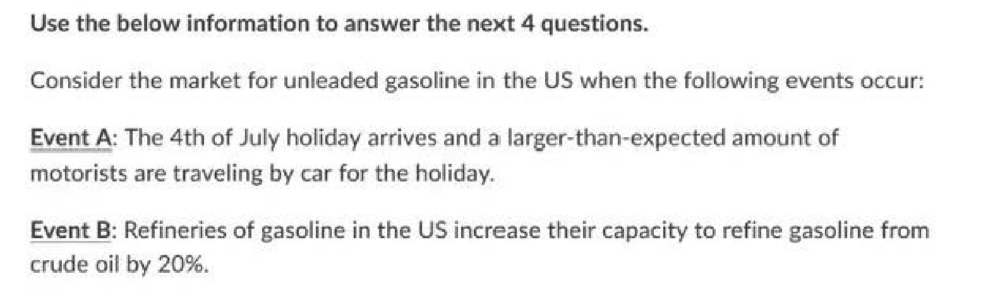السؤال 10 (2 نقاط)
Question: As a result of Event A (alone), what will be the ultimate effect on price and quantity within the market for gasoline in the US?
Event A: July 4th holiday and a large number of drivers are traveling by car.
التفسير بالمصري
Event A = ناس كتير بتسافر بالعربية في الأجازة. ده بيزود الطلب على البنزين (منحنى الطلب بيتحرك يمين).
لما الطلب يزيد والعرض ثابت:
- السعر هيزيد ✅
- الكمية المباعة هتزيد ✅
تخيل في رمضان الطلب على الياميش بيزيد - السعر بيعلى والكمية المباعة بتزيد!
السؤال 11 (2 نقاط)
Question: As a result of Event B (alone), what will be the ultimate effect on price and quantity within the market for gasoline in the US?
Event B: Refineries increase their capacity by 20%.
التفسير بالمصري
Event B = المصافي زودت الإنتاج 20%. ده بيزود العرض (منحنى العرض بيتحرك يمين).
لما العرض يزيد والطلب ثابت:
- السعر هينزل ✅
- الكمية المباعة هتزيد ✅
زي لما موسم البرتقان ييجي والسوق يتملي برتقان - السعر بينزل والكمية بتزيد!
السؤال 12 (2 نقاط)
Question: If Event A and Event B occur simultaneously, what will be the ultimate effect on price and quantity in the market for gasoline in the US?
التفسير بالمصري
لو الحدثين حصلوا مع بعض: الطلب زاد (Event A) والعرض زاد (Event B).
- الكمية: الاتنين بيزودوا الكمية → الكمية أكيد هتزيد ✅
- السعر: Event A بيرفع السعر بس Event B بينزله → مش عارفين النتيجة النهائية
تخيل في رمضان الطلب على التمر زاد (سعر يعلى) بس في نفس الوقت موسم التمر جه وفي محصول كبير (سعر ينزل). الكمية أكيد هتزيد بس السعر مش عارفين!
السؤال 13 (2 نقاط)
Question: Which of the following conditions would result in a shortage of gasoline in the US?
التفسير بالمصري
العجز (Shortage) بيحصل لما الكمية المطلوبة أكبر من الكمية المعروضة. ده بيحصل لما الحكومة تحط سقف سعري (Price Ceiling) تحت سعر التوازن.
- (a) حد أدنى للسعر فوق التوازن = فائض (Surplus) مش عجز ❌
- (b) سقف سعري تحت التوازن = عجز ✅
- (c) نقص العرض = هيتكون توازن جديد مش عجز دائم ❌
- (d) نقص الطلب = فائض مش عجز ❌
تخيل الحكومة قالت كيلو السكر بـ 5 جنيه بس التكلفة 8 جنيه - المصانع مش هتنتج كفاية والناس هتلاقي عجز!
📊 سياق الأسئلة 14-17
استخدم الجدول التالي عن تكاليف وعوائد تقليل التلوث باستخدام أجهزة تنقية الهواء (Air Scrubbers):
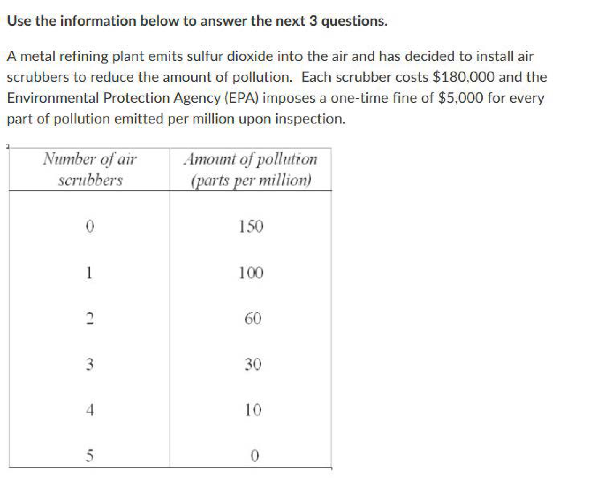السؤال 14 (2 نقاط)
Question: What is the financial impact of the first air scrubber on the total net benefit from pollution reduction for the company?
التفسير بالمصري
صافي الفائدة من أول جهاز تنقية هواء:
- من الجدول: MB للجهاز الأول = $320,000 و MC = $70,000
- صافي الفائدة = MB - MC = $320,000 - $70,000 = $250,000
يعني لو مصنع هيركب فلتر هوا وتكلفته 70 ألف بس هيوفر غرامات تلوث بـ 320 ألف - يبقى كسبان 250 ألف صافي!
السؤال 15 (2 نقاط)
Question: How many air scrubbers should the company install to maximize net benefit?
التفسير بالمصري
القاعدة: نستمر في تركيب أجهزة طالما MB ≥ MC. نتوقف لما MC > MB.
- الجهاز 1: MB > MC ✅ نركب
- الجهاز 2: MB > MC ✅ نركب
- الجهاز 3: MB ≥ MC ✅ نركب
- الجهاز 4: MB < MC ❌ نتوقف
يعني زي لما بتوظف عمال - كل ما العامل يضيف أكتر من مرتبه تجيبه، لما تكلفته تزيد عن إنتاجيته توقف!
السؤال 16 (2 نقاط)
Question: What is the maximum total net benefit from pollution reduction?
التفسير بالمصري
أقصى صافي فائدة = مجموع (MB - MC) لكل جهاز لحد ما نتوقف:
- الجهاز 1: $320,000 - $70,000 = $250,000
- الجهاز 2: $280,000 - $150,000 = $130,000
- الجهاز 3: $200,000 - $150,000 = $50,000
- الإجمالي = $250,000 + $130,000 + $50,000 = $430,000
السؤال 17 (2 نقاط)
Question: What is the net benefit from producing the fourth scrubber?
التفسير بالمصري
الجهاز الرابع:
- MB = $140,000
- MC = $150,000
- صافي الفائدة = $140,000 - $150,000 = -$10,000 (خسارة!)
عشان كده منركبوش الجهاز الرابع - تكلفته أكتر من فايدته!
📊 سياق الأسئلة 18-20
استخدم الجدول التالي عن عدد شاشات العرض في محل بيع بالتجزئة:
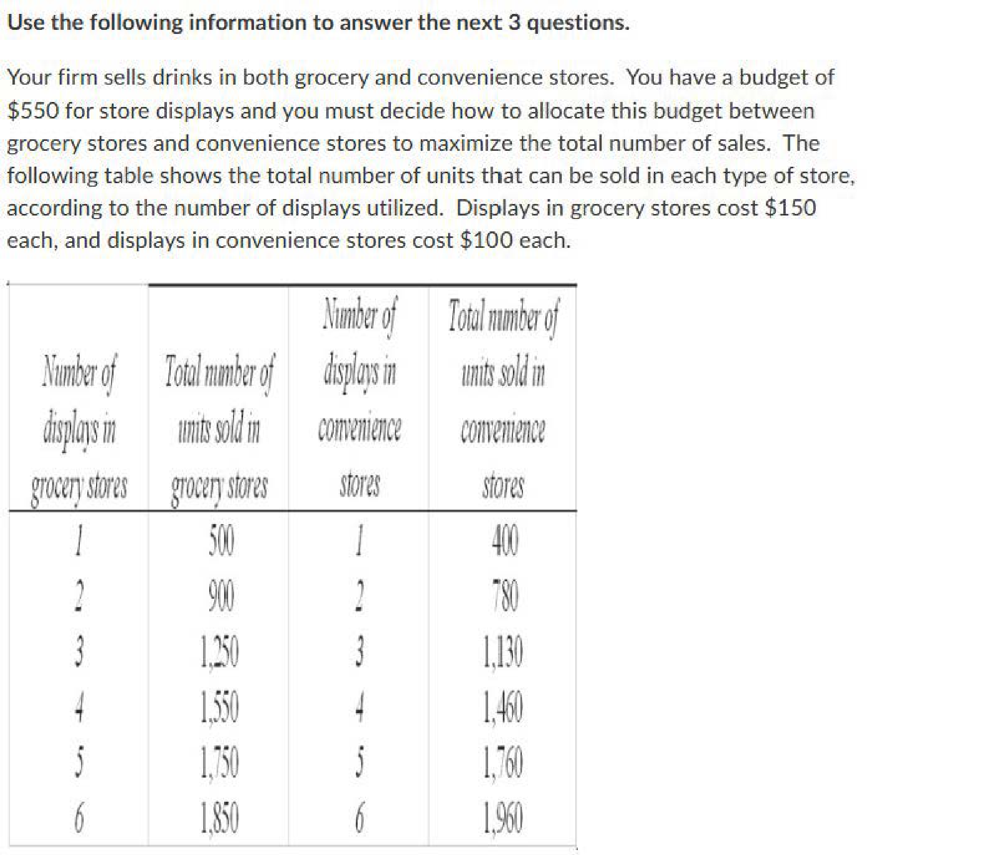السؤال 18 (2 نقاط)
Question: Based on the table, how many end-aisle displays should the manager set up to maximize net benefit?
التفسير بالمصري
نفس القاعدة: نستمر طالما MB ≥ MC. من الجدول، عند 3 شاشات الفائدة الحدية لسه أكبر من أو تساوي التكلفة الحدية، وعند 4 التكلفة بتزيد عن الفائدة.
يعني لو عندك محل وبتحط عروض - كل عرض بيجيب زباين لكن بيكلفك وقت ومكان. لما تكلفة العرض تزيد عن مكسبه توقف!
السؤال 19 (2 نقاط)
Question: What is the maximum total net benefit from the displays?
التفسير بالمصري
نحسب مجموع صافي الفائدة لأول 3 شاشات من الجدول. الإجمالي بيطلع $310.
السؤال 20 (2 نقاط)
Question: Now suppose the benefit per display increases by $40. How many displays should the manager set up?
التفسير بالمصري
لما الفائدة زادت $40 لكل شاشة، الشاشة الرابعة بقت مربحة (MB + 40 > MC). بس الخامسة لسه مش مربحة.
يعني لو المحل ده في موسم تخفيضات والعروض بقت تجيب فلوس أكتر - هتحط عروض أكتر!
📊 سياق الأسئلة 21-23
استخدم جدول المنفعة التالي:
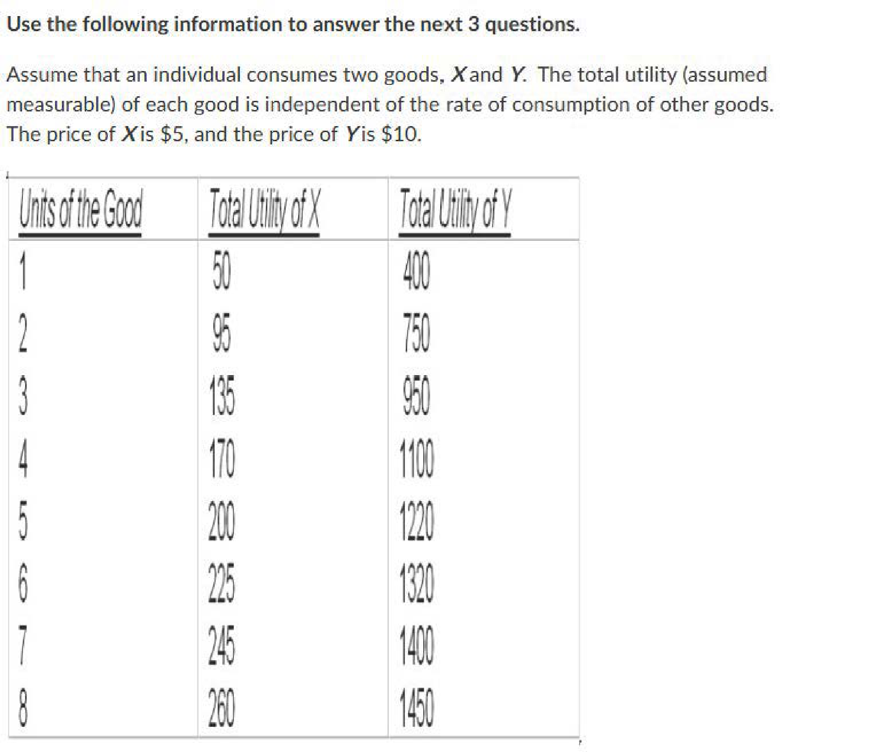السؤال 21 (2 نقاط)
Question: What is the marginal utility of the 3rd unit?
التفسير بالمصري
المنفعة الحدية = الفرق في المنفعة الكلية: MU_3 = TU_3 - TU_2. من الجدول الناتج = 20.
يعني أول ساندوتش كشري بيفرحك جداً، التاني كويس، التالت لسه مقبول. الفرق في السعادة هو المنفعة الحدية!
السؤال 22 (2 نقاط)
Question: At what unit does diminishing marginal utility begin?
التفسير بالمصري
تناقص المنفعة الحدية بيبدأ لما MU تبدأ تقل. من الجدول، MU للوحدة الأولى كانت الأعلى، والتانية بقت أقل. يبقى التناقص بدأ من الوحدة التانية.
زي أول كوباية شاي الصبح - أحلى حاجة. التانية كويسة بس مش زيها!
السؤال 23 (2 نقاط)
Question: At what units does total utility decrease?
التفسير بالمصري
TU بتقل لما MU تبقى سالبة. بعد الوحدة الرابعة MU بتبقى سالبة.
تخيل أكلت 4 ساندوتشات وبطنك اتملت - الخامس هيوجعك! ساعتها المنفعة الكلية بتقل.
📊 سياق الأسئلة 24-28
استخدم منحنى الطلب الخطي الموضح أدناه. المعادلة: P = 100 - 0.1Q.
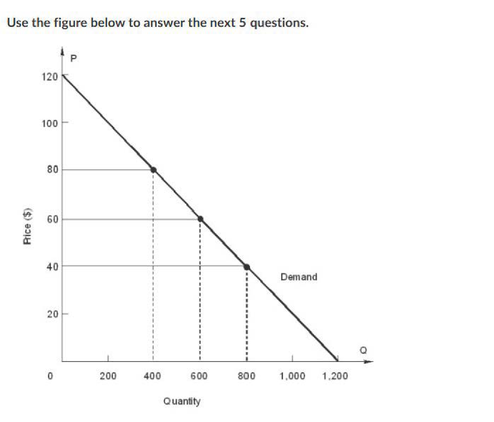السؤال 24 (2 نقاط)
Question: What is total revenue at 200 units of output?
التفسير بالمصري
P = 100 - 0.1(200) = 80
TR = P × Q = 80 × 200 = 16,000
السؤال 25 (2 نقاط)
Question: What is total revenue at 400 units of output?
التفسير بالمصري
P = 100 - 0.1(400) = 60. يبقى TR = 60 × 400 = 24,000
السؤال 26 (2 نقاط)
Question: What is total revenue at 600 units of output?
التفسير بالمصري
P = 100 - 0.1(600) = 40. يبقى TR = 40 × 600 = 24,000
لاحظ إن TR عند 400 = TR عند 600! ده لأن الطلب مرن عند 400 وغير مرن عند 600.
السؤال 27 (2 نقاط)
Question: If output increases from 400 to 600 units, what happens to marginal revenue?
التفسير بالمصري
MR = (Δ TR/Δ Q) = (24000 - 24000/600 - 400) = 0
الإيراد الحدي = صفر! ده النقطة اللي عندها المرونة = 1 (Unitary Elastic).
السؤال 28 (2 نقاط)
Question: If output goes from 600 to 800 units, what happens to marginal revenue?
التفسير بالمصري
P_{800} = 100 - 0.1(800) = 20. TR_{800} = 20 × 800 = 16,000
MR = (16000 - 24000/800 - 600) = (-8000/200) = -40
الإيراد الحدي بقى سالب! كل ما بنزود الإنتاج بعد نقطة معينة، الإيراد الكلي بيقل.
📊 سياق الأسئلة 29-31
سياق عن مرونة الطلب لشركة Boeing. المرونة السعرية |Ed| > 1.
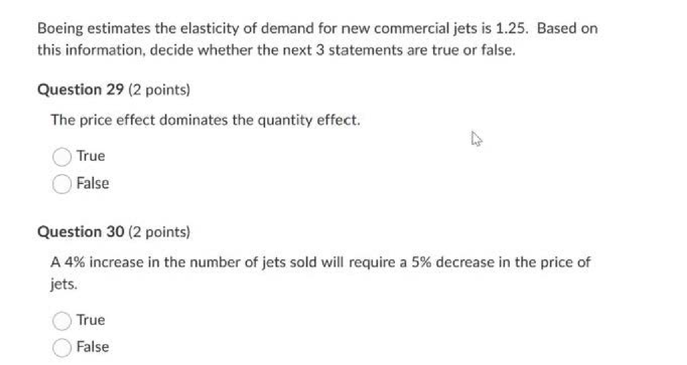السؤال 29 (2 نقاط)
Question: True or False: Boeing's demand is elastic.
التفسير بالمصري
|Ed| > 1 يبقى الطلب مرن. يعني لو Boeing رفعت السعر شوية، الشركات هتقلل طلباتها بنسبة أكبر لأن في منافسين زي Airbus!
السؤال 30 (2 نقاط)
Question: True or False: If Boeing raises its price, total revenue will decrease.
التفسير بالمصري
القاعدة: طلب مرن + زيادة سعر = إيراد أقل.
زي لو صاحب محل رفع سعر الطماطم أوي - الناس هتروح المحل التاني وهيخسر!
السؤال 31 (2 نقاط)
Question: What strategy should Boeing use to increase revenue?
التفسير بالمصري
طلب مرن → نزل السعر عشان تكسب أكتر. زي التخفيضات - لما المحل ينزل الأسعار الناس بتشتري أكتر بكتير!
📊 سياق الأسئلة 32-36
تحليل انحدار لشركة Border Snacks (صلصة Picante):
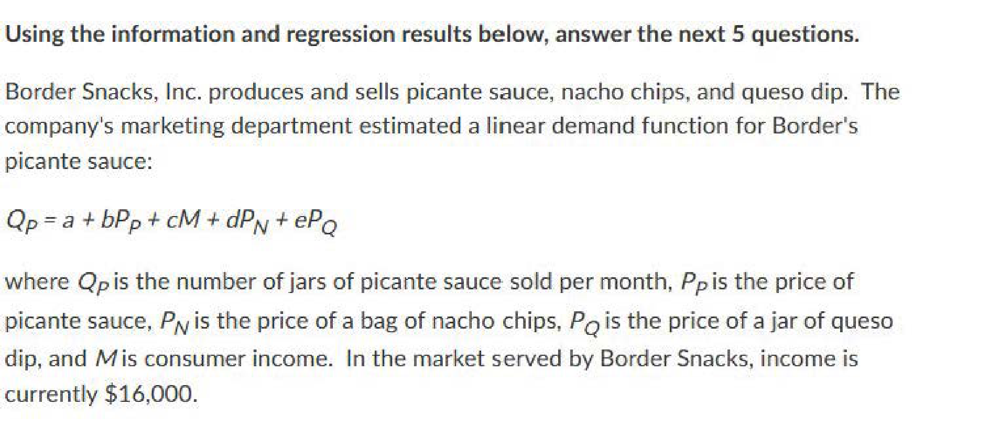 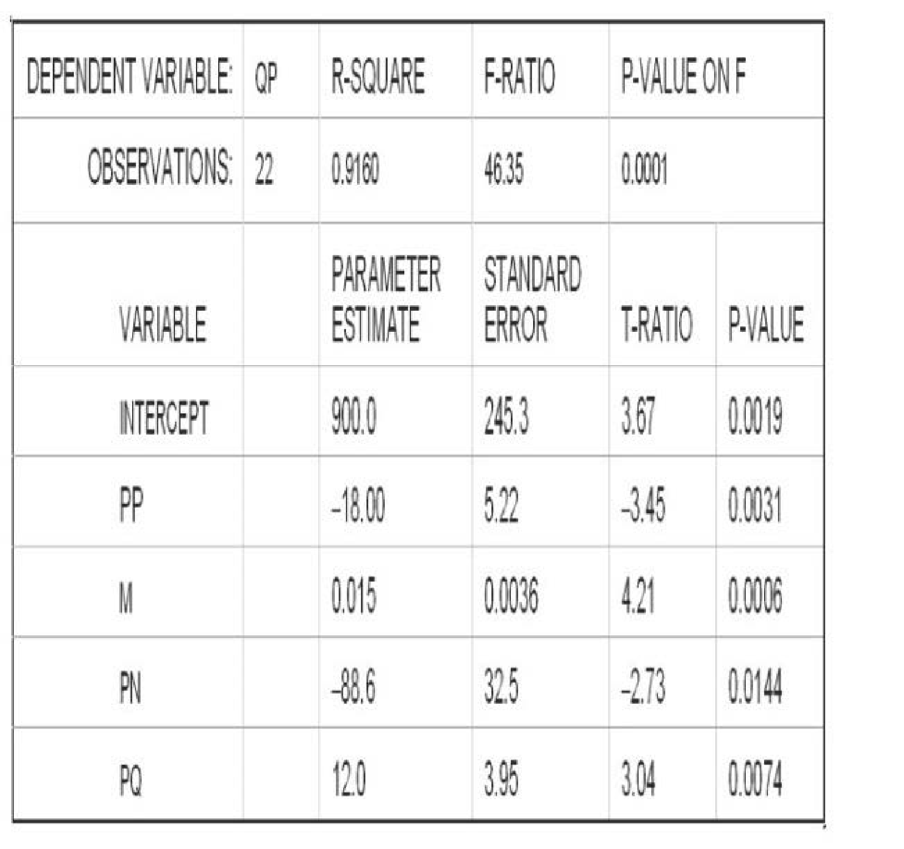السؤال 32 (2 نقاط)
Question: What is the estimated demand equation for Border Snacks' picante sauce?
التفسير بالمصري
بنقرأ القيم من عمود "Parameter Estimate" في جدول الانحدار ونركبها في المعادلة. كل معامل بيقول لنا تأثير المتغير على الكمية المطلوبة.
السؤال 33 (2 نقاط)
Question: Are all the estimated coefficients statistically significant at the 5% level?
التفسير بالمصري
لو p-value أقل من 0.05 أو |t| > 2 تقريباً يبقى معنوي. من الجدول كل المعاملات p-value بتاعتها أقل من 0.05.
يعني كل المتغيرات دي فعلاً بتأثر على المبيعات ومش مجرد صدفة!
السؤال 34 (2 نقاط)
Question: What is the own-price elasticity of demand for picante sauce?
التفسير بالمصري
E_d = b × (P/Q). النتيجة = -1.5 (مرن). لو السعر زاد 1%، الكمية هتقل 1.5%.
السؤال 35 (2 نقاط)
Question: What is the income elasticity of demand for picante sauce?
التفسير بالمصري
E_M = c × (M/Q). النتيجة = 0.6 (موجبة = سلعة عادية Normal Good، أقل من 1 = ضرورية Necessity).
لو دخل الناس زاد 10%، مبيعات الصلصة هتزيد 6% بس.
السؤال 36 (2 نقاط)
Question: If the price of nacho chips decreases by 2.4%, what is expected to happen to the sales of picante sauce?
التفسير بالمصري
الناتشو والصلصة سلع مكملة (Complements). لما سعر الناتشو ينزل، الناس تشتري ناتشو أكتر وبالتالي صلصة أكتر!
📊 سياق الأسئلة 37-39
جدول الإنتاج:
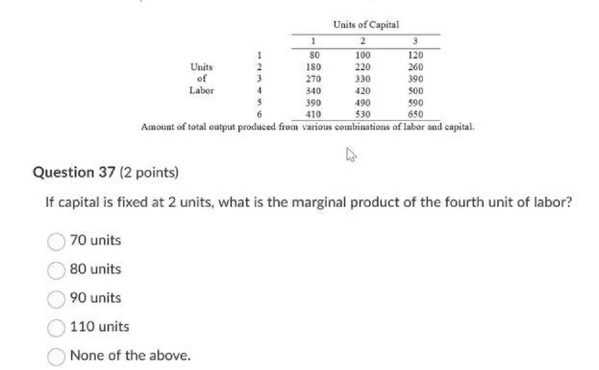السؤال 37 (2 نقاط)
Question: If capital is fixed at 2 units, what is the marginal product of the fourth unit of labor?
التفسير بالمصري
MP_4 = TP(4,2) - TP(3,2) = 420 - 330 = 90 وحدة. يعني العامل الرابع أضاف 90 وحدة للإنتاج!
السؤال 38 (2 نقاط)

Question: If capital is fixed at one unit, diminishing returns begin with the:
التفسير بالمصري
عند رأس مال = 1: MP1=80, MP2=100, MP3=90. MP3 < MP2 → بدأ يقل! تناقص العوائد بيبدأ من العامل التالت.
السؤال 39 (2 نقاط)
Question: If the capital stock is fixed at 2 units and there are 4 units of labor, what is the average product of labor?
التفسير بالمصري
AP = (TP/L) = (420/4) = 105 وحدة لكل عامل.
السؤال 40 (2 نقاط)
Question: Suppose you run a house-painting company with 2 workers painting 4 houses/month. 3rd worker → 6, 4th → 9, 5th → 13, 6th → 15. Diminishing returns:
التفسير بالمصري
MP: العامل 3=2, العامل 4=3, العامل 5=4, العامل 6=2. العامل 6 أقل من 5 ← تناقص عوائد.
السؤال 41 (2 نقاط)
Question: If a firm is producing in a technically efficient manner, then it must be the case that:
التفسير بالمصري
الكفاءة الفنية (Technical Efficiency) معناها إنك بتطلع أقصى إنتاج ممكن من المدخلات المتاحة. مش معناها إنك بتنتج بأقل تكلفة (ده الكفاءة الاقتصادية).
📊 سياق الأسئلة 42-45
التكاليف الثابتة = $500. استخدم الجدول التالي:
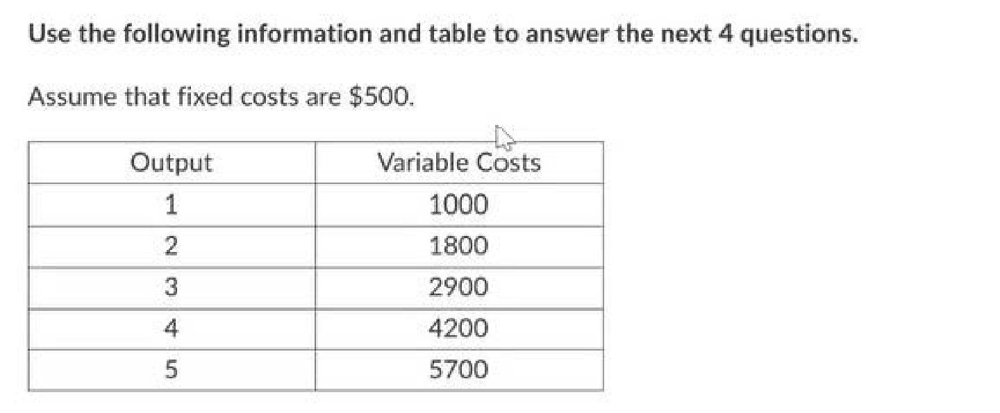السؤال 42 (2 نقاط)
Question: At an output of 4 units, what is the average total cost?
التفسير بالمصري
ATC = (TC/Q) = (500 + 4200/4) = (4700/4) = 1175
السؤال 43 (2 نقاط)
Question: What is the average fixed cost of the fourth unit?
التفسير بالمصري
AFC = (FC/Q) = (500/4) = 125. التكلفة الثابتة بتتوزع على عدد الوحدات.
السؤال 44 (2 نقاط)
Question: At an output of 4 units, what is the marginal cost?
التفسير بالمصري
MC = VC_4 - VC_3 = 4200 - 2900 = 1300. الوحدة الرابعة كلفتنا $1,300 إضافية.
السؤال 45 (2 نقاط)
Question: At an output of 4 units, what can be concluded about average product?
التفسير بالمصري
لما MC > AVC، ده معناه إن AVC بيزيد، وبالتالي AP بيقل. MC=$1300 > AVC=$1050 → AP بيقل.
السؤال 46 (2 نقاط)
Question: At Huffy's bicycle factory, 1,700 employees currently produce 15,000 bicycles a day. Five years ago, 2,200 workers made 10,000 bicycles daily. Which is true?
التفسير بالمصري
5 سنين فاتوا: AP = 10,000 ÷ 2,200 = 4.55. دلوقتي: AP = 15,000 ÷ 1,700 = 8.82. الإنتاجية اتحسنت!
📊 سياق الأسئلة 47-50
A firm produces 1000 units with 40 labor units and 30 capital units. MP_L = 60, MP_K = 120. Price of labor = $30, price of capital = $40.
السؤال 47 (2 نقاط)
Question: What is the total cost of production?
التفسير بالمصري
TC = (w × L) + (r × K) = (30 × 40) + (40 × 30) = 1200 + 1200 = 2400
السؤال 48 (2 نقاط)
Question: What is the marginal product per dollar of labor?
التفسير بالمصري
(MP_L/w) = (60/30) = 2.0. كل دولار في العمالة بيجيبلك 2 وحدة إنتاج إضافية.
السؤال 49 (2 نقاط)
Question: What is the marginal product per dollar of capital?
التفسير بالمصري
(MP_K/r) = (120/40) = 3.0. كل دولار في رأس المال بيجيبلك 3 وحدات إنتاج!
السؤال 50 (2 نقاط)
Question: If the firm's manager wishes to maximize output at the given cost, what should be done to the usage of capital and labor?
التفسير بالمصري
لتعظيم الإنتاج: لازم (MP_L/w) = (MP_K/r). دلوقتي 2.0 ≠ 3.0. بما إن رأس المال بيدي عائد أعلى لكل دولار، يبقى نزود رأس المال ونقلل العمالة.
يعني لو كل جنيه في ماكينة بيجيب 3 وحدات بس في عامل بيجيب 2 - حول الفلوس للماكينات!
🎉 انتهى الامتحان - 50 سؤال مع الحلول الكاملة
بالتوفيق والنجاح إن شاء الله!